A Fair Approach to Redistricting
Andrey Grebenik, Dawit Kelile, Elizandro Padilla, Karis Park
College of Business and Technology, Seattle Pacific University
DAT 4500: Data and Society
Dr. Brain Gill
June 3, 2026
Abstract
Historically, there have been many attempts to weaken and control voter power. Though certain attempts have now been outlawed, redistricting still provides a means for legislators and politicians to accomplish their own goals. Gerrymandering—manipulating electoral district lines to benefit one's own interests during the redistricting process—is one highly undemocratic way to control voting power. Currently, multiple states in the U.S. have jumped to redistrict their states to alter voter results for the mid-decade election, bringing the question of what it means to be a fair and democratic nation. To explore fairness in redistricting, we created three goals for redistricting: abide by all state and federal laws and legislature, create maps with proportional partisan favored districts to population, and respect communities of common interest by keeping them together. We used five metrics to evaluate the quality of our maps: ReADI, efficiency gap, competitiveness, compactness through Polsby-Popper, and population. Our results, evaluated through these metrics, accomplished all the goals created. Our first map, abiding by state and federal laws, scored better in population deviation, and compactness. We accomplished our second goal through creating maps with a lower efficiency gap and higher competitiveness. Our third goal was established by minimizing variance between ReADI percentiles in our maps, keeping people of communities of interest related to socioeconomic status together. The accomplishment of our goals defines three different ways that we can establish fairness in redistricting. Each goal has different strengths and weaknesses yet defining three maps display the different ways that redistricting fairness can be accomplished. Our work towards these three goals further explores what it means to consider fairness and democracy in the redistricting process.
Introduction
Whether it was through grandfather's clauses, literacy tests, or blatant violence, various tactics have been used to control voting over the years in the United States. While these particular voter suppression methods are no longer in use, efforts to weaken voter power are still fully present today. One of the most targeted points in controlling voters is the redistricting process. Redistricting follows the decennial Census of the U.S. population, where states must recreate their district borders to account for any population changes. These borders determine the district that people will vote for state legislature and House representatives. Gerrymandering is the practice of manipulating these electoral district lines to benefit one's own interests during the redistricting process (Hill, Coleman, and Bassett, 2021).
Gerrymandering suppresses the voices of voters by using strategies such as packing and cracking. Packing is a gerrymander strategy that crams all members of unfavored groups, racial or partisan, into a district to then allocate the districts around the packed one to the favored party (Li, 2021). While cracking, it diminishes a group’s power by splitting members into various districts to make them the minority. Both strategies have been used repeatedly to serve a particular political party, oppress certain racial groups, and uplift individual politicians, at the cost of many American votes.
As mentioned earlier, the redistricting process used to happen only once every ten years after the census report. However, states have broken this cycle and are currently in a violent political and legal race to rearrange district maps to receive their desired partisan outcomes before the 2026 Midterm Election. It is during the 2026 Midterm Election where Americans vote for their desired House representatives, making these maps quintessential for both political parties. Following Texas’ initial move in 2025 to create more five more republican districts, eight more states have implemented new biased maps, with many other states still fighting to get their own gerrymandered maps into place.
The Current Study
In the April 2026 Virginia ballot, an amendment was proposed to allow a mid-decade district to redraw to “restore fairness in the upcoming elections” (Virgina Department of Elections, 2026). This recent surge of gerrymandering in the United States posed the question of what it actually looks like to “restore fairness” in redistricting. We defined fairness in the redistricting process as redistricting in a way that does not tamper district outcomes for selfish interests. Fairness looks like prioritizing voters by giving them the primary voice in elections. To ensure fairness in the redistricting process, we will create district maps of the states of Virginia and Florida that follow three clear goals. Our first goal is to create a map that attempts to achieve fairness by abiding all current state and federal legislature and court rulings. Our second goal is to create a map that has a proportional number of partisan districts for the partisan population in each state, so that no party has a false advantage. The final goal is to create a district map that honors communities of common interest, defined by socioeconomic status, by keeping these groups together.
Methods
Data
The datasets and packages we used include the information from the 2020 decennial census via PL 94-171 enumeration, geospatial boundaries provided by the census through the tirgris package, the precinct-level VEST data for the 2020 general election, and finally the 2019-2023 ACS 5-year estimates. All of these datasets are used to provide us with the information needed to compose our three sets of maps.
PL 94-171 Enumeration
The PL 94-171 enumeration was accessed through the PL94171 package in R. The PL94171 package retrieves a summary file from the census bureau’s official FTP directory for the appropriate year and state (U.S. Census Bureau, 2020). The PL94-171 is an enumeration mandated by the US constitution based on the decennial census population count. We used one key metric that allows us to determine the ratio of data disaggregation defined by looking at block level by population per census block. To act in accordance with the “one-person-one-vote" principle, we also made use of the population metric to ensure relative population equality in our redistricting algorithm.
Tigris
To create the geospatial boundaries for our districts, we used the tigris package in R. The tigris package retrieves a shape file from the Census Bureau’s official FTP directory for the specified year, in our case 2020, and state (U.S. Census Bureau, 2020). The tigris package uses information from the US Census Bureau’s TIGER/Line database to make geometric information available for usage. We first used Census block level geometries to aggregate and disaggregate data from other geometric levels (specifically precinct and tract). Next, we used congressional district geometries to clip precinct level boundaries within the state borders to avoid unrealistic adjacencies across water.
Voting and Election Science Team (VEST)
The Voting and Election Science Team (VEST) data found on the Redistricting Data Hub (RDH). The VEST dataset holds precinct-level 2020 general election results for Florida and Virginia in the form of a geographic boundary file (shapefile). Because there is no localized source for a state’s precinct boundaries, RDH has aggregated the precinct geographies from a number of sources (Florida Department of State Division of Elections, 2026). Unfortunately, the VEST data for Virginia in 2020 did not receive a validation like Florida did, so it is unknown exactly what the source for the geometries and voting was from. However, referencing RDH’s FAQ on original source, it is likely that the data was retrieved from a collection partner such as the Secretary of State’s office, MIT Election Data and Science Lab (MEDSL), or Open Elections. Two metrics were used from the VEST data with the first being G20PREDBID and the second being G20PRERTRU. The G20PREDBID metric gives us the number of votes for the democratic candidate in the 2020 general election (Biden) per precinct. While the G20PRERTRU, which tells us the number of votes for the republican candidate in the 2020 general election (Trump) per precinct. The geometry of the precincts within the VEST data was used to construct a list of adjacencies for use in our redistricting algorithm and in determining the Polsby-Popper compactness score of our generated congressional districts.
American Community Survey (ACS) 5-Year Estimates
To identify communities of common interest, the American Community Survey (ACS) 5-Year Estimates data was used. Four tract-level ACS estimates were accessed from the census from the years 2019-2023: poverty, education, income, and language. The ACS data comes from four directories (per state) from RDH. RDH retrieved ACS data through the U.S. Census’ API endpoint.
For poverty information, the Total Citizen Voting Age Population and Total CVAP (CVAP and TOT_CVAP23) were used with income in the past 12 months below the poverty line (BPV_CVAP23) to calculate the percentage of people living in poverty in a single precinct.
To analyze education, we took the number of people with a bachelors, masters, doctorate, and professional school degree (BACH_DEG23, MAST_DEG23, DOCT_DEG23, PROF_DEG23), and the total population of people years 25 and over (POP_25OV23) to calculate the percentage of people in a precinct that have an education above a bachelor's degree.
For income we used multiple metrics that identified the number of households with yearly incomes in different numeric categories, ranging from less than $10,000 to over $200,000 (LESS_10K23, X10K_15K23, X15K_20K23, X20K_25K23, X25K_30K23, X30K_35K23, X35K_40K23, X40K_45K23, X45K_50K23, X50K_60K23, X60K_75K23, X75K_100K23, X100_125K23, X125_150K23, X150_200K23, X200K_MOR2). Because median household income is incompatible during disaggregation or aggregation, we used the mentioned income bracket counts to estimate median household income to create our SES maps.
Last, the metrics SP_EN_LW23 and OT_EN_LW23 were used to tell us the number of people that Spanish and English less than “very well,” and speak other languages and speak English less than “very well.” We also used the Total population when considering language ACS data (TOT_POP23), to calculate the percentage of people not proficient in English.
All the above metrics were used to evaluate a Reproducible Area Deprivation Index (ReADI) based on Stanford's ReADI (Stanford University, Socioeconomic Position Indices, 2026). ReADI is used as the key controlling metric for the third set of generated maps that are focused on grouping people by socioeconomic status. Details on how ReADI is calculated can be found in the section detailing our statistical methods.
Statistical Methods
Reproducible Area Deprivation Index (ReADI)
To measure socio-economic status, we used the Reproducible Area Deprivation Index, or ReADI. ReADI is a score that measures how socioeconomically disadvantaged a neighborhood is based on factors of income, education, housing quality, employment, etc. ReADI determines these scores by combining all factors from the ACS into a ranking system of all block groups in deciles from 1 to 10. The ACS factors are first scaled depending on the indicators (such as income disparity), then rescaled based on the z-scores. Weights are then created for each indicator based on percentage of population that falls within the indicator. Last, a Factor Analysis Model is fitted on the indicators with weights, and the output is rescaled to a range from 0 to 100. A score closer to 100 indicates greater socioeconomic deprivation. We used ReADI over standard ADI, because ADI produces errors when scaling indicators for reproducibility.
Efficiency Gap
One of the two ways we decide to measure ‘fairness’ is through the efficiency gap. The efficiency gap calculates the difference between “wasted votes” of two political parties (number of votes in excess of a winning party or the number of votes for the losing party), which is then divided by the total number of votes casted. The calculation itself is a percentage that determines the threshold for a district to be considered ‘fair,’ ensuring that differences between votes that both parties lose is minimized.
Competitiveness
The second way to measure ‘fairness,’ is through utilizing competitive districts. Since the whole point of gerrymandering is to create safe districts for parties, we decided to ensure a number of competitive districts so that the votes within a district are up to population votes. District competitiveness is determined by taking the number of votes favoring each party in each precinct and making the number of votes for each party near equal.
Compactness
Compactness is another measure we decide to consider in ensuring continuity of districts as required by state law. We use the Polsby-Popper score to measure this since it is the most common and accepted measure across states in the redistricting process (Belotti et al., 2023). The Polsby score measures a ratio between the area of a circle of the district to the area of another circle using the perimeter of the district. Since the score is a ratio, a score close to one is optimally compact while a score close to zero is not compact. In practice, a score between 0.2 to 0.3 are generally acceptable scores due to the reality of the shapes of states and districts.
Population
Population is the required measurement from the Census to ensure people within a district have equal voting power. All states are required to use the Census to determine population of track and block levels to create districts and redistrict based on keeping population equal between districts. A deviation of 10% is acceptable when creating districts.
Pipeline
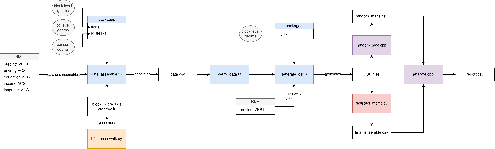
Our analysis consists of five steps: data assembly/aggregation, data verification, adjacency generation, map generation, and map analysis. First, an R script was used to assemble all the data sources into one precinct-level data.csv file per state. The PL94171 summary for our state at the block level is aggregated to the precinct level via centroid overlay. Each ACS file for our state at the tract level undergoes population-weighted disaggregation to the block level and then centroid overlay aggregation to the precinct level. VEST data undergoes no transformations as it’s already at the precinct level. During this step we also calculate the ADI percentile per precinct.
Second, because we have performed several spatial aggregation and disaggregation operations, it is very important to verify the integrity of our data before use. The validation strategy starts with aggregating all block level values up to the county level, then compares them against official Census county-level benchmarks. This approach will allow us to detect whether the degradation process was preserved. It also checks whether the errors are distributed evenly across the state or constructed in a specific region. A 10% error threshold is used as the benchmark considering standard practice.
Third, after verifying our data is usable, we resolve the adjacencies between precinct geometries. This is resolved by buffering geometries to detect neighbors while pruning invalid connections. Any island geometries are bridged to the nearest precinct to ensure perfect contiguity. Each node in our adjacency graph represents a precinct, each edge represents an adjacency, and each edge-weight represents the shared perimeter between precincts. The graph representing these adjacencies is exported as a Compressed Sparse Row (CSR) file for faster processing in the next step.
Fourth, using our data and CSR file, we start generating maps using our CUDA accelerated ReCom MCMC (Recombination Monte Carlo Markov Chain) engine. This engine utilizes parallel tempering to escape local minima and improve global state exploration. Our energy function combines population targets, polsby-popper compactness, partisan efficiency gap, competitiveness and socio-economic homogeneity via ReADI variance. This engine has launched a total of three times for each state with different configurations in order to generate maps that align with our goals. The top 100 maps for each goal are scrutinized and saved.
In a separate C++ script, we use SMC (Sequential Monte Carlo) to generate a large number of random maps for both states with the only constraint being population. These random maps will be used to analyze the output of our ReCom MCMC engine and the current redistricting plan. Finally, a script and application combination is used to summarize and analyze the results of our ReCom MCMC engine using our five key metrics.
Results
Our algorithm was mostly able to create maps that improved respective scores for each goal. We created six maps in total, each state receiving three maps for each goal. To establish an improved map for our law abidance map, we established a better map that would have a lower population deviation score and better Polsby-Popper compactness measure. For our second partisan proportionality map, we defined a successful map as one with a low efficiency gap, and higher competitiveness. For our last goal—keeping common socio-economic communities together—we defined success by a lower variance between ReADI percentiles throughout our map. We compared our maps to the actual current district map, and to other trial randomly generated maps. The maps that we selected exceeds other maps in respect to the metrics of their respective goal, while avoiding extreme geographically gerrymandered maps.
Law Abidance Map
These maps are focused on the goal of abiding by state and federal laws. The map that held the lowest population deviance score and better Polsby-Popper compactness core was selected for each state (see Map 1 and Map 2).
Florida
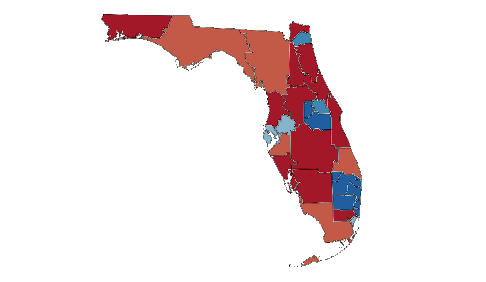
Map 1: Our proposed Floridia map that best aligns with laws.
For the map that we chose for Florida, in Figure 1 you can compare the map that we created in blue, on a boxplot comparing various metric scores with the current map and other maps that we generated. In that visualization you can see that the Polsby-Popper scores for the map we created is closer to one than the other maps, meaning it is more compact. Our map generated is also much closer to zero percent than the random sample (see Table 1), meaning that our maps successfully meet the criteria we were attempting to meet for this goal.
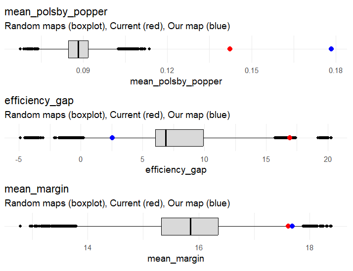
Figure 1: Boxplot of Polsby-Popper, efficiency gap, and margin of victory for random, current, and our proposed map for Floridia (where our proposed map is the best map that aligns with laws).
| Current | Our map | Random sample |
|---|
| Max population deviation | 0% | 0.354% | 2.581% |
| Mean Polsby-Popper | 0.142 | 0.178 | 0.0883 |
| Efficiency gap | 16.912 | 2.548 | -7.716 |
| Democrat seats | 9 | 13 | 11.591 |
| Republican seats | 19 | 15 | 16.408 |
| Mean margin of victory | 17.613% | 17.689% | 15.828% |
Table 1: Table of metrics values for random, current, and our proposed map for Floridia (where our proposed map is the best map that aligns with laws)
Virginia
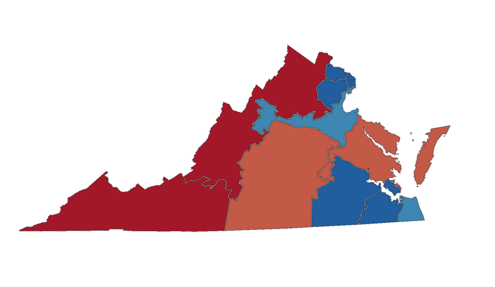
Map 2: Our proposed Virginia map that best aligns with laws
For Virginia we used the same metrics to evaluate our results. Our Polsby-Popper compactness score being higher than both the current and random sampled maps (See Figure 2 and Table 2). Though it is difficult to compare the population deviation to the original map, due to the specification for each individual person, our population deviation score is still lower than our randomly sampled map selection.
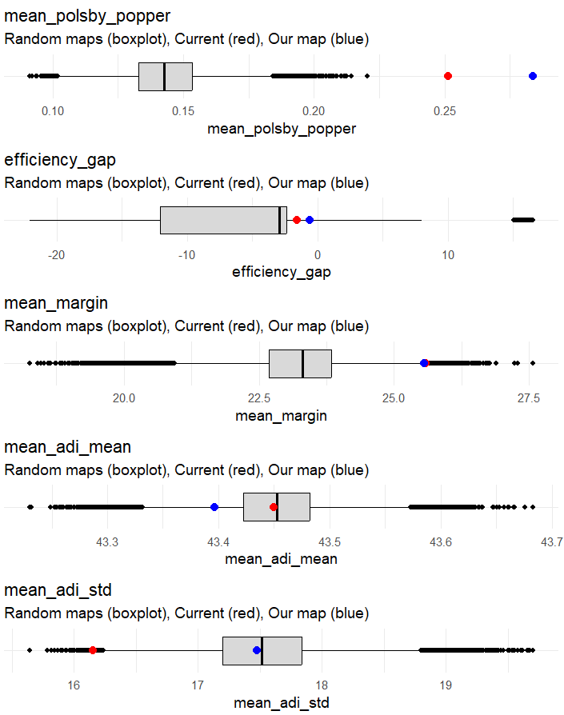
Figure 2: Boxplot of Polsby-Popper, efficiency gap, and margin of victory for random, current, and our proposed Virginia map (where our proposed map is the best map that aligns with laws).
| Current | Our map | Random sample |
|---|
| Max population deviation | 0% | 0.514% | 1.661% |
| Mean Polsby-Popper | 0.251 | 0.283 | 0.143 |
| Efficiency gap | -1.581 | -0.597 | -5.363 |
| Democrat seats | 7 | 7 | 7.289 |
| Republican seats | 4 | 4 | 3.710 |
| Mean margin of victory | 25.579% | 25.551% | 23.244% |
Table 2: Table of metrics values for random, current, and our proposed Virginia map (where our proposed map is the best map that aligns with laws)
Proportional Partisan Map
For our second goal, our attempt to create a map with proportional partisan representation relies on maximizing competitiveness and lowering our efficiency gap. Both of our maps were made to optimize off of these metrics, and we selected maps that best fit these criteria.
Florida
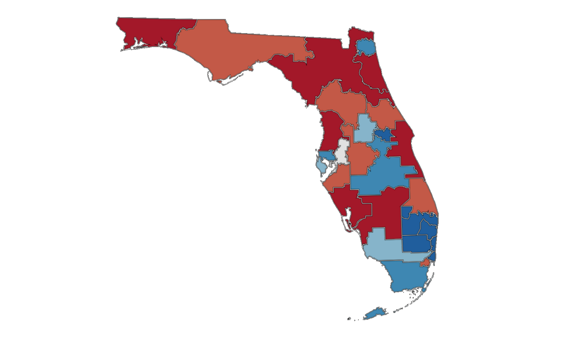
Map 3: Our proposed Florida map that has the best partisan proportion.
Our map for Florida has a much better efficiency gap score than the current map, with almost a score difference of almost 17 (See Table 3). We were also able to accomplish perfect competitiveness, with 14 seats for each party, while the current map is skewed with 19 Republican seats, and 9 Democrat seats (See Table 3). When evaluating by these metrics, our map is highly improved compared to the current district boundaries.
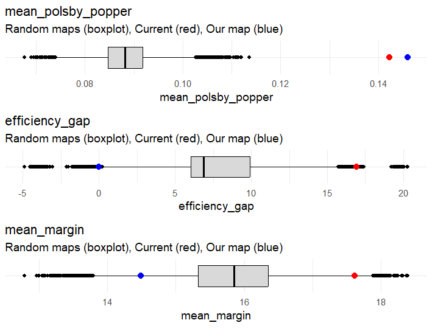
Figure 3: Boxplot of Polsby-Popper, efficiency gap, and margin of victory for random, current, and our proposed Floridia map (where our proposed map that has the best partisan proportion).
| Current | Our map | Random sample |
|---|
| Max population deviation | 0% | 0.518% | 2.581% |
| Mean Polsby-Popper | 0.142 | 0.146 | 0.0883 |
| Efficiency gap | 16.912 | -0.000875 | -7.716 |
| Democrat seats | 9 | 14 | 11.591 |
| Republican seats | 19 | 14 | 16.408 |
| Mean margin of victory | 17.613% | 14.485% | 15.828% |
Figure 3: Boxplot of Polsby-Popper, efficiency gap, and margin of victory for random, current, and our proposed Virgina map (where our proposed map that has the best partisan proportion).
Virginia
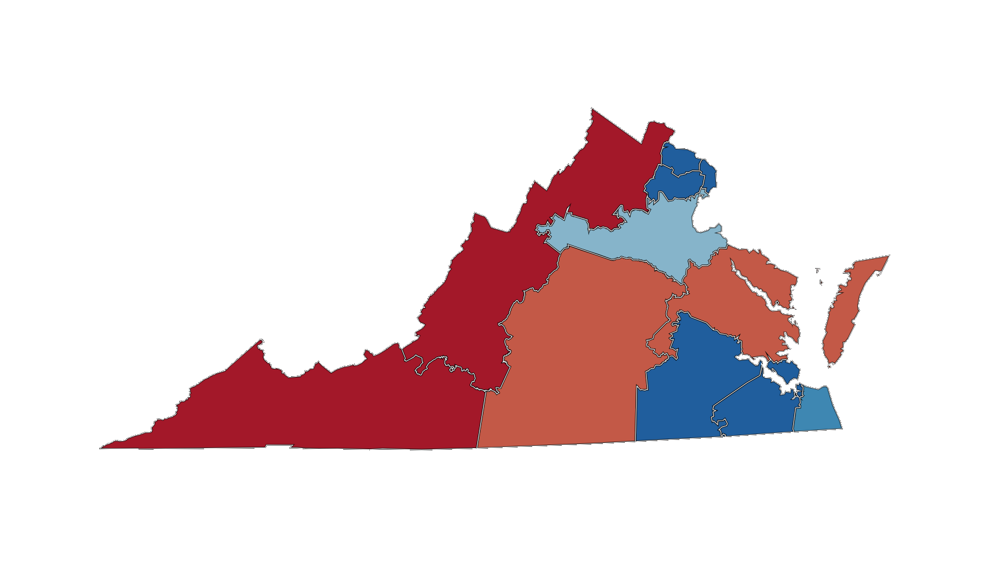
Map 4: Our proposed Virginia map that has the best partisan proportion.
Our map selected for Virginia does not actually differ from the current map in number of seats, however, it does hold a better efficiency gap than the current map, as our efficiency gap is closer to zero (See Table 4). The difficulties in equalizing the number of seats largely comes from the mostly concentrated population of Democratic voters in the state of Virginia.
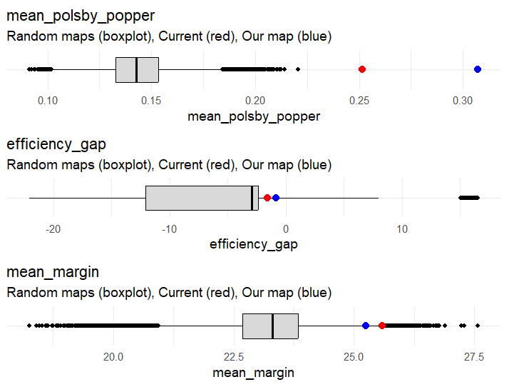
Figure 4: Boxplot of Polsby-Popper, efficiency gap, and margin of victory for random, current, and our proposed Virgina map (where our proposed map that has the best partisan proportion).
| Current | Our map | Random sample |
|---|
| Max population deviation | 0% | 0.980772% | 1.661% |
| Mean Polsby-Popper | 0.251 | 0.307284 | 0.143 |
| Efficiency gap | -1.581 | -0.838757 | -5.363 |
| Democrat seats | 7 | 7 | 7.289 |
| Republican seats | 4 | 4 | 3.710 |
| Mean margin of victory | 25.579% | 25.2426% | 23.244% |
Table 4: Table of metrics values for random, current, and our proposed Virginia map (where our proposed map has the best partisan proportion)
Maintaining Communities Map
To analyze our success in maintaining communities of common interest, we will use the level of variance and number of “affluent” and “deprived” districts through ReADI. The ReADI metric will help us to establish the context of those communities and allow us to group them together.
Florida
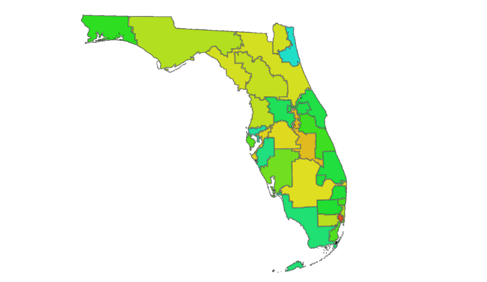
Map 5: Our proposed Floridia map that best maintains communities of common interest.
We chose our Florida map due to its number of “affluent” and “deprived” districts (View Table 5). Our generated map holds one of each district, while the current map holds none of these communities together, and our randomly generated maps very uncommonly held these communities together.
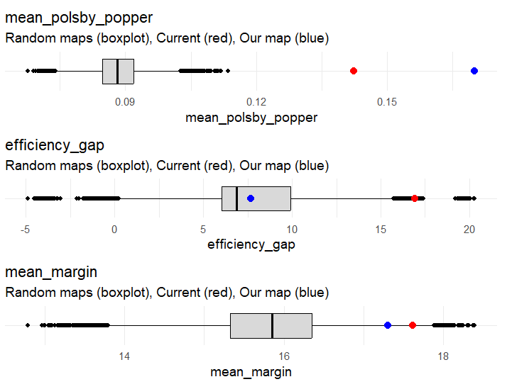
Figure 5: Boxplot of Polsby-Popper, efficiency gap, margin of victory, and ADI scores for random, current, and our proposed Floridia map (where our proposed map that best maintains communities of common interest).
| Current | Our map | Random sample |
|---|
| Max population deviation | 0% | 0.463% | 2.581% |
| Mean Polsby-Popper | 0.142 | 0.170 | 0.0883 |
| Efficiency gap | 16.912 | 7.686 | -7.716 |
| Democrat seats | 9 | 12 | 11.591 |
| Republican seats | 19 | 16 | 16.408 |
| Mean margin of victory | 17.302% | 17.689% | 15.828% |
| Deprived districts | 0 | 1 | 0.183 |
| Affluent districts | 0 | 1 | 0.00086 |
Table 5: Table of metrics values for random, current, and our proposed Floridia map (where our proposed map that best maintains communities of common interest).
Virginia
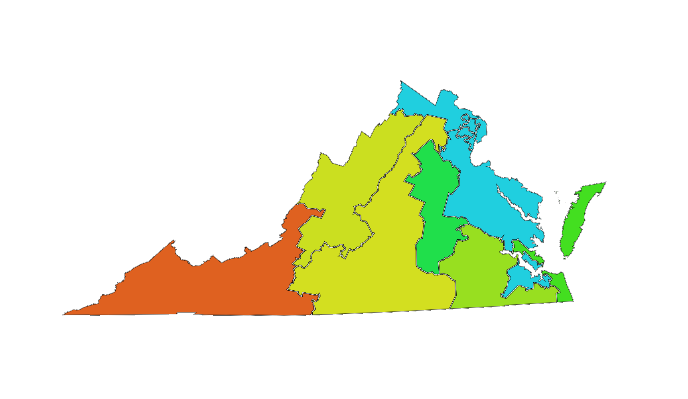
Map 6: Our proposed Virginia map that best maintains communities of common interest.
For Virginia, we were not able to create a map that exceeds the current map regarding this goal. The number of “affluent” and “deprived” districts are consistent with the current map (See Table 6). Our map is about equal to the current map when evaluating by our metrics, as we have slightly improved compactness, but with a slightly lowered the efficiency gap. While our map was not technically more successful in meeting this goal than the current map, it greatly exceeds our other random attempts.
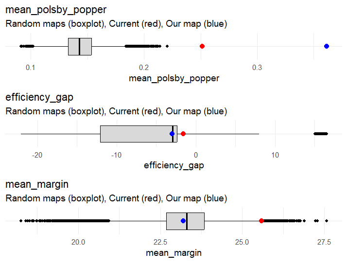
Figure 6: Boxplot of Polsby-Popper, efficiency gap, margin of victory, and ADI scores for random, current, and our proposed Virginia map (where our proposed map best maintains communities of common interest).
| Current | Our map | Random sample |
|---|
| Max population deviation | 0% | 0.286% | 1.661% |
| Mean Polsby-Popper | 0.251 | 0.348 | 0.143 |
| Efficiency gap | -1.581 | -2.468 | -5.363 |
| Democrat seats | 7 | 7 | 7.289 |
| Republican seats | 4 | 4 | 3.710 |
| Mean margin of victory | 25.579% | 25.551% | 23.244% |
| Deprived districts | 1 | 1 | 0.562 |
| Affluent districts | 3 | 3 | 3.0091 |
Table 6: Table of metrics values for random, current, and our proposed Virginia map (where our proposed map that best maintains communities of common interest).
Discussion
Through our algorithm, we were able to fulfill all three of our fair redistricting goals of creating maps that obey laws, have proportional partisan lean, and maintain communities of common interests. Our maps showed improvements from the current district maps in both Florida and Virginia regarding while also being improvements over randomly generated maps while utilizing the five metrics that we chose.
The maps for our first goal provide a model for one approach to creating fair district maps. In Virginia’s constitution, compactness is a required criteria for redistricting efforts, however, Virginia and many other states have struggled to define what compactness looks like (Yancey, 2026). Even in states that require compact and contiguous districts, how compact the districts must be legally abiding has been crudely defined. This has given legislators and the courts much leeway in how tightly they uphold this criterion, allowing more room to create biased or partial maps. In our map creation, our use of the Polsby-Popper score has provided a target score regarding compactness of districts, which could be applied to the creation of more fair district maps in the future. Legally, a population deviation of up to 10% in permissible across districts. However, the smaller the level of deviation, the more equal people’s votes are (Fryer et al., 2007), therefore our map having a lower deviation percentage, improves the level of equality for voters. When laws and criteria are established, redistricting fairly should look like striving to follow these regulations as best as possible to prioritize the voices of the people.
Gerrymandering has commonly packed or cracked the unfavored groups to minimize their power (Li, 2021). To create maps that oppose these methods for our second goal, we effectively made districts that maximize competitiveness. In maximizing competitiveness, the outcome of the district is not up to the legislators to define, but up to the popular vote. This is ultimately working on creating a fairer map, as it protects the unbiased democratic process by allowing voters to control the partisan outcomes. Because our map also has a lower efficiency gap, we have equalized the level of representation that each person has with their vote. This establishes more equality for voters in both of our states compared to the real maps currently in place.
When groups with a common interest or similar issues are split up, it can be hard for them to get their needs met in the government (Hill, 2021). House representatives may ignore minority voter’s opinions or needs, especially if they are low income. Grouping these underserved people together can give them power to have their voices heard with a representative serving that particular district (All About Redistricting, 2021). Through the minimization of ReADI variance, we have effectively grouped populations in Florida with similar SES levels, so that their needs can be prioritized and heard. In Virginia, we were unable to create a map that exceeded the current map in regard to this goal. This was largely due to the highly stable ReADI distribution within the state, and because the differences in ReADI scores largely correlated with more urban areas, which resulted in very extreme gerrymandering. So while we potentially might have been able to create a map that more closely grouped communities of common SES together, it would have come at the compromise of compactness and other fairness metrics.
We did encounter a few limitations within our work, with the greatest limitation being our dependency on Florida and Virginia. Because our pipeline is made up of such a broad collection of scripts, it would be difficult to generalize this algorithm onto other states. Our method itself also has a few limitations, as the engine we implemented is highly iterative and time-consuming. This is largely due to our pipeline’s focus on our specific ReCom MCMC engine, making our map production method not very sustainable for large scale projects. The last limitation of this project is the limited capacity to explore different metrics and goals in improving fairness. Several techniques were omitted specifically because they are not compatible with our engine. There are many different measures and approaches to creating unbiased and just maps, however, many more people need to be exploring and implementing these approaches to find something that fits the needs of the population in a state.
As mentioned before, these three goals provide very different approaches to how to prioritize fairness. Each of the goals have different strengths and weaknesses but give us a larger picture of what it means to produce unbiased districts to honor the vote of each and every person. To accomplish more fair and democratic means in this redistricting process, it is important for legislators and others involved in creating these maps to explore different ways to allow for the voices of American people to be heard. This is how we can preserve our democracy.
References
All About Redistricting. (2021). Rules of redistricting: Communities of interest [Fact sheet]. https://redistricting.lls.edu/wp-content/uploads/Basics-English6.pdf\
Baker v. Carr, 369 U.S. 186 (1962). https://supreme.justia.com/cases/federal/us/369/186/
Belotti, P., Buchanan, A., & Ezazipour, S. (2023). Political districting to optimize the Polsby-Popper compactness score with application to voting rights. Optimization Online. https://optimization-online.org/wp-content/uploads/2023/05/Political_Districting_to_Optimize_Polsby_Popper_Compactness_OO_style.pdf
Brennan Center for Justice. (2017, July 3). What is redistricting and why is it important? https://www.brennancenter.org/our-work/analysis-opinion/what-redistricting-and-why-it-important
Brennan Center for Justice. (2026, April 8). Gerrymandering explained. https://www.brennancenter.org/our-work/research-reports/gerrymandering-explained
Fisher, Z. (n.d.). Measuring compactness. https://fisherzachary.github.io/public/r-output.html
Florida Legislature. (1968). Constitution of the State of Florida. https://www.leg.state.fl.us/statutes/index.cfm?submenu=3
Fryer, R. G., Jr., & Holden, R. T. (2007). Measuring the compactness of political districting plans (NBER Working Paper No. 13456). National Bureau of Economic Research. https://doi.org/10.3386/w13456
Franke, M. (2017, July 7). Computing Bayes factors. Bayes, Pragmatics, Evolution Etc. https://michael-franke.github.io/statistics/modeling/2017/07/07/BF_computation.html
Guest, O., Kanayet, F. J., & Love, B. C. (2019). Gerrymandering and computational redistricting. Journal of Computational Social Science, 2, 119–128. https://doi.org/10.1007/s42001-019-00053-9
Harvard Civil Rights–Civil Liberties Law Review. (2017, March 9). Race and the architecture of voting districts: Bethune-Hill v. Virginia State Board of Elections. https://journals.law.harvard.edu/crcl/race-and-the-architecture-of-voting-districts-bethune-hill-v-virginia-state-board-of-elections/
Hill, D., Coleman, M., & Bassett, E. (2021). Disenfranchisement and suppression of Black voters in the United States. Ballard Brief. https://ballardbrief.byu.edu/issue-briefs/disenfranchisement-and-suppression-of-black-voters-in-the-united-states
Index of /Geo/TIGER/TIGER2020. (n.d.). U.S. Census Bureau. https://www2.census.gov/geo/tiger/TIGER2020/
Index of /programs-surveys/decennial/2020/data/01-Redistricting_File--PL_94-171/Pennsylvania. (n.d.). U.S. Census Bureau. https://www2.census.gov/programs-surveys/decennial/2020/data/01-Redistricting_File--PL_94-171/Pennsylvania/
Jones, M. (2018, June 8). Packing, cracking and the art of gerrymandering around Milwaukee: Mapping the outlines of representation in Wisconsin's legislative districts. University of Wisconsin Applied Population Laboratory. https://apl.wisc.edu/shared/tad/packing-cracking
Kincannon, L., Rackey, J. D., & Thorning, M. (2025, August 8). What to know about redistricting and gerrymandering. Bipartisan Policy Center. https://bipartisanpolicy.org/explainer/redistricting-and-gerrymandering-what-to-know
Lindsay, J. M. (2026, May 4). Gerrymandering, the Supreme Court, and the 2026 midterm elections. Council on Foreign Relations. https://www.cfr.org/articles/gerrymandering-the-supreme-court-and-the-2026-midterm-elections
National Conference of State Legislatures. (n.d.). Changing the maps: Tracking mid-decade redistricting. https://www.ncsl.org/redistricting-and-census/changing-the-maps-tracking-mid-decade-redistricting
Northern Virginia Regional Commission. (2024). Median household income overall. NOVA Region Dashboard. https://www.novaregiondashboard.com/median-household-income
Precinct-level election results. (n.d.). Florida Department of State. https://dos.fl.gov/elections/data-statistics/elections-data/precinct-level-election-results/
Rural Health Information Hub. (2024). Map of median household income, 2024 [Data visualization]. https://www.ruralhealthinfo.org/charts/58
Southern Poverty Law Center. (n.d.). Understanding voter suppression in today's election process. Learning for Justice. https://www.splcenter.org/learning-for-justice/understanding-voter-suppression-in-todays-election-process
U.S. Constitution amend. XIV. (1868). https://constitution.congress.gov/constitution/amendment-14
U.S. Constitution amend. XV. (1870). https://constitution.congress.gov/constitution/amendment-15
U.S. National Archives and Records Administration. (2022, February 8). Civil Rights Act (1964). National Archives. https://www.archives.gov/milestone-documents/civil-rights-act
Vedantam, S. (2018, May 1). In gerrymandered districts, constituents likely to lose economic security. NPR. https://www.npr.org/2018/05/01/607303602/in-gerrymandered-districts-constituents-likely-to-lose-economic-security
Virginia Department of Elections. (2026). Proposed amendment for April 2026 special election. https://www.elections.virginia.gov/election-law/proposed-amendment-for-april-2026-special-election/
Virginia Division of Legislative Automated Systems. (2026, April 1). Constitution of Virginia. https://law.lis.virginia.gov/constitution
Yancey, D. (2026, April 17). Virginia's constitution requires “compact” districts. Courts have balked at defining compactness. Cardinal News. https://cardinalnews.org/2026/04/17/virginias-constitution-requires-compact-districts-courts-have-balked-at-defining-compactness/